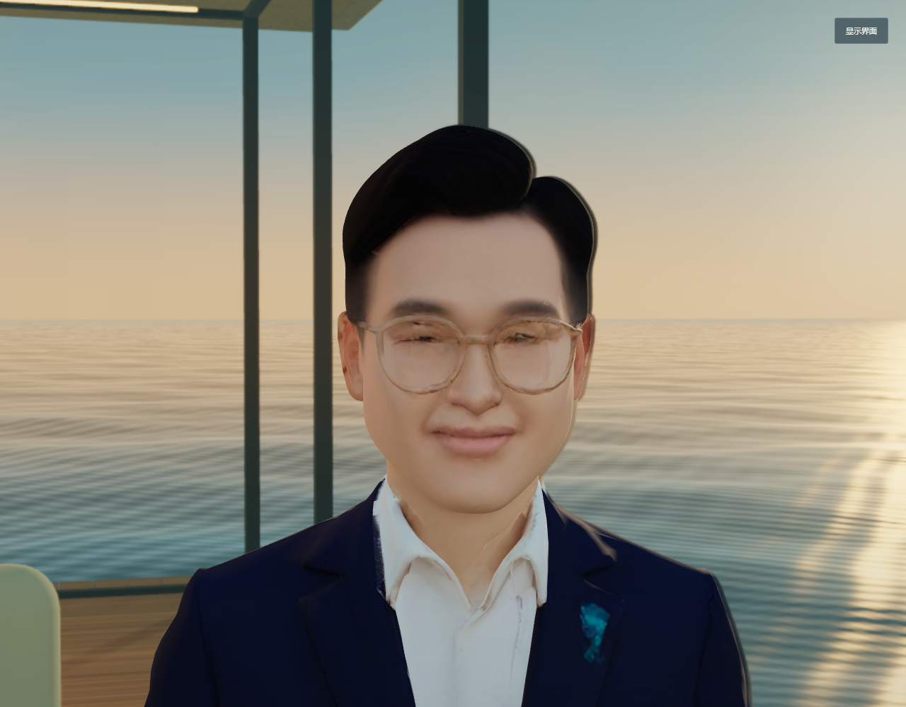
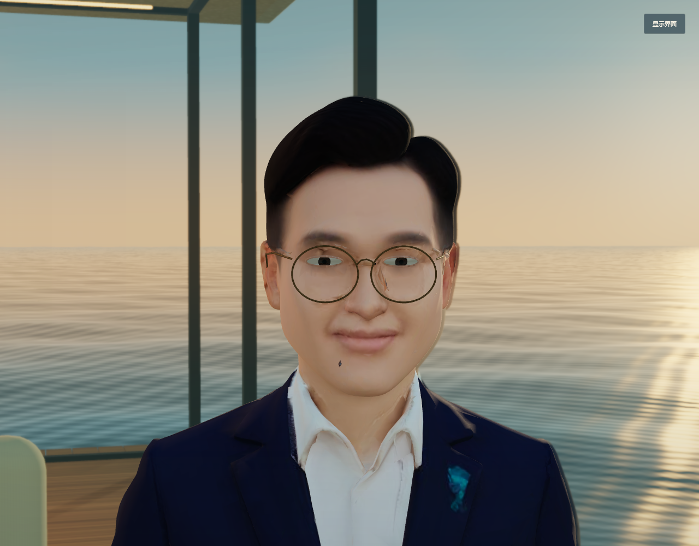
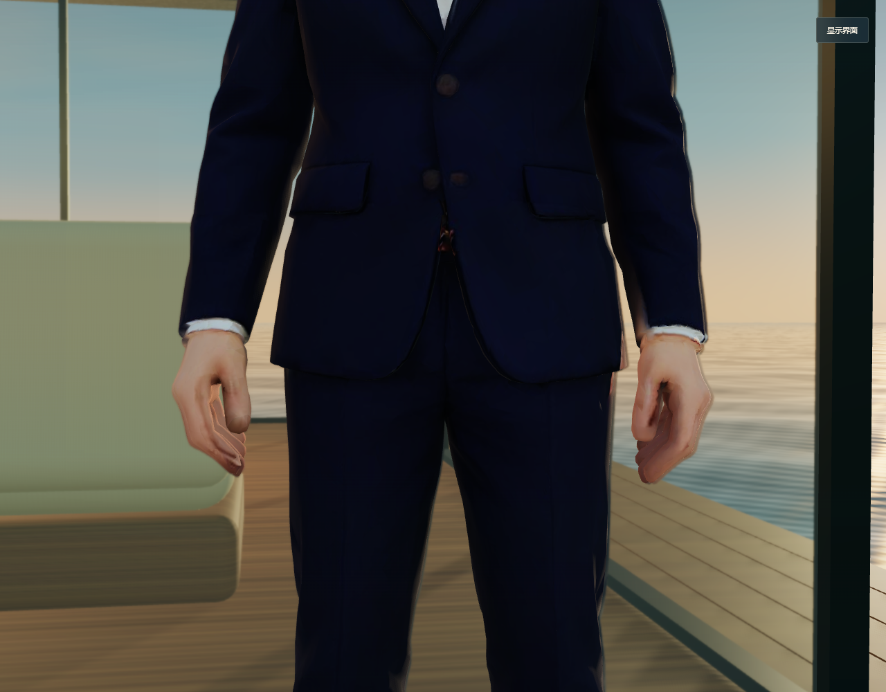
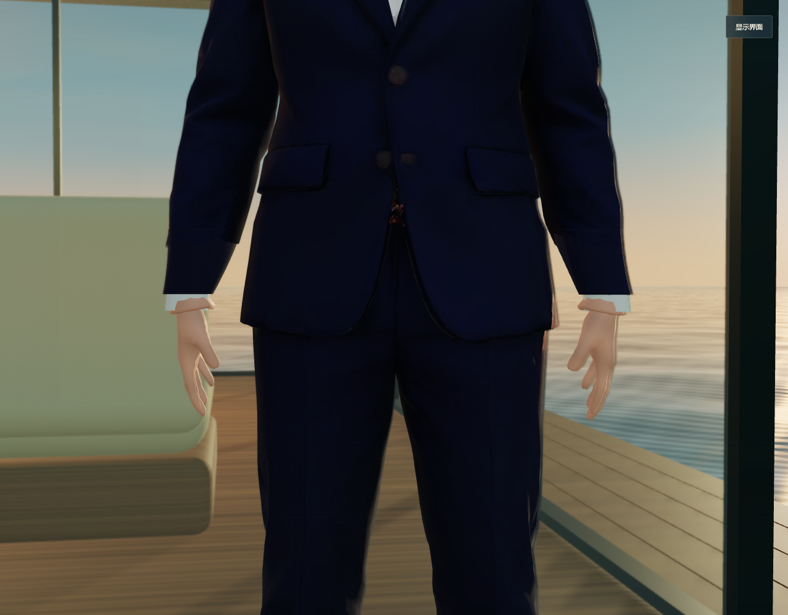
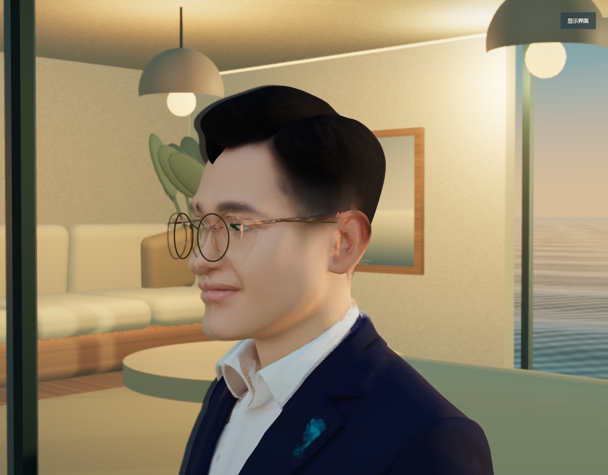
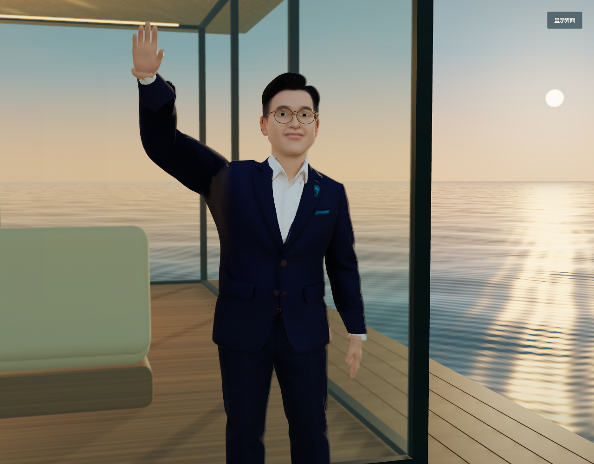

这轮保留原有脸型、头发和深蓝西装，局部处理眼部与镜框，并用已有授权成人手部网格替换黏连的手指。下面全部来自同一网页、同一光照和对应机位；不是生成效果图。






当前判断：有局部进展，尚未完成。眼神仍偏僵，镜腿和眼角残留不自然，衣领、胸前图案及肩腋仍保留原生成模型的痕迹。继续只靠局部脚本修补，难以把所有近景细节修到成品质量。
原始四人物GLB、上轮单人模型和可编辑文件均保留。新手部几何来自本项目已有的 Microsoft/Rocketbox 成人模型（MIT）；没有替换原人物的脸或整体身体。此稿没有新增眨眼、口型、独立手指动画或换装。